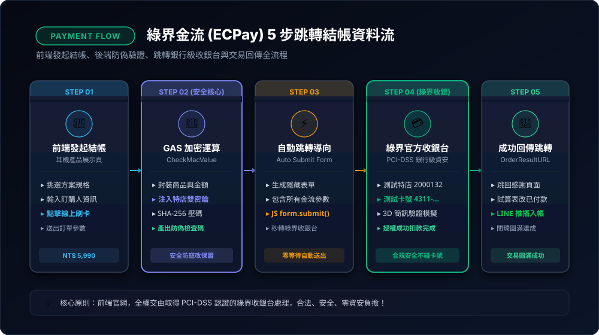
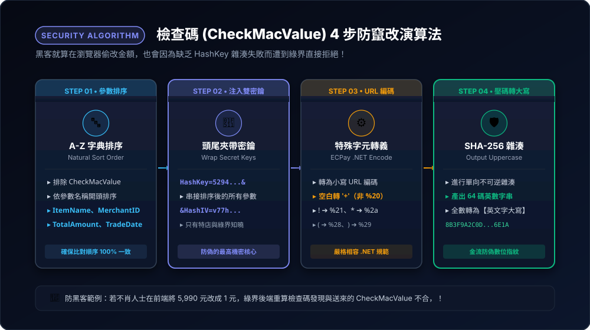
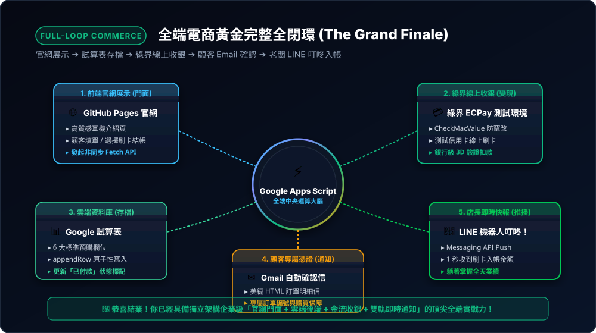

綠界科技 (ECPay) 測試金流：讓學生親身體驗真實網頁刷卡收款！
不用開公司、不用上傳身分證、不用花一毛錢！本章將帶你串接全台灣普及度最高的第三方金流「綠界科技 ECPay」公開測試沙盒（Sandbox），讓你的 SmartSound Pro 耳機網頁真正具備信用卡刷卡與結帳跳轉功能！
8-1 為什麼「金流」是現代網頁開發者的身價分水嶺？

💳 圖 8-1：綠界金流 (ECPay) 5 步跳轉結帳資料流
前端發起 ➔ GAS 運算防偽檢查碼 ➔ 自動跳轉收銀台 ➔ 測試信用卡 3D 扣款 ➔ 成功跳轉回傳。
前端發起 ➔ GAS 運算防偽檢查碼 ➔ 自動跳轉收銀台 ➔ 測試信用卡 3D 扣款 ➔ 成功跳轉回傳。
在前面的章節中，我們已經完成了漂亮的網頁展示、試算表登記、自動寄確認信與 LINE 即時通知。然而，在真實商業場景中：
- ❌ 光靠預購登記容易跑單： 客人填了表單但沒有真正掏錢，訂單轉換率難以估算。
- ✅ 串接線上刷卡立刻變現： 當網頁具備「線上刷卡」功能，訪客在激情下單的當下完成付款，這才是真正具備商業變現價值的完整電商平台！
- 🔒 資安零風險原則： 我們的網頁絕對不可以私自記錄使用者的信用卡號！透過合規的第三方金流，客人會跳轉到綠界具備銀行級 PCI-DSS 資安認證的收銀台刷卡，既安全又有公信力。
8-2 免註冊、免審核！綠界官方公開測試沙盒（Sandbox）
很多初學者以為要接金流必須先跑銀行、繳交營業登記，其實完全不用！ 綠界官方為全台灣工程師與學生公開了一套共用的測試金鑰，任何人都可以免費隨取隨用：
🔑 綠界官方公開測試參數表（請學員牢記或直接交給 AI）：
| 參數名稱 | 測試值 | 用途說明 |
|---|---|---|
| 測試收銀台網址 (URL) | https://payment-stage.ecpay.com.tw/Cashier/AioCheckOut/V5 | 付款表單送往的綠界測試窗口（帶有 stage）。 |
| 特店編號 (MerchantID) | 2000132 | 綠界官方預設公開測試特店 ID。 |
| 加密金鑰 (HashKey) | 5294y06JbISpM5x9 | 運算檢查碼的對稱金鑰。 |
| 初始向量 (HashIV) | v77hoKGq4kWxNNIS | 加密雜湊演算法的輔助向量。 |
💳
綠界官方專用測試信用卡（刷了不用花錢）：
卡號：
卡號：
4311-9522-2222-2222 | 有效年月：任何未來月份（如 12/30） | 末三碼：222 | 手機 OTP 簡訊碼：任意 6 碼（如 123456）。
8-3 金流運作原理：為什麼需要「檢查碼 (CheckMacValue)」？

🛡️ 圖 8-2：檢查碼 (CheckMacValue) 4 步防竄改雜湊演算法
A-Z 字典排序 ➔ 頭尾注入 HashKey/HashIV ➔ ECPay .NET URL Encode ➔ SHA-256 雜湊轉英文字大寫。
A-Z 字典排序 ➔ 頭尾注入 HashKey/HashIV ➔ ECPay .NET URL Encode ➔ SHA-256 雜湊轉英文字大寫。
很多初學者問：「為什麼不能在網頁直接寫一個按鈕跳轉到綠界？」
因為如果任何人都能隨便跳轉，駭客就能偷偷把金額從 $5,990 改成 $1 元！
🛡️ 檢查碼 (CheckMacValue) 防偽防篡改機制：
- 排序與打包： 系統把商品名稱、金額、特店編號等所有參數依照英文字母 A~Z 嚴格排序。
- 前後加鹽加密： 前面加上
HashKey，後面加上HashIV。 - SHA-256 數位簽章： 透過 SHA-256 演算法壓出一串 64 位元的不可逆英數雜湊代碼（CheckMacValue）。
- 綠界驗證： 當表單送達綠界時，綠界伺服器會用一模一樣的公式重算一遍，只要金額被偷偷改成 1 元，檢查碼立刻不符合，綠界直接拒絕交易！
過去初學者寫這段加密算到懷疑人生，但在 AI 時代，這項複雜運算直接由 Antigravity 1 秒搞定！
8-4 動口不動手：向 Antigravity 索取綠界結帳跳轉程式
現在我們要讓 Antigravity 在 GAS 與前端網頁加入綠界測試付款按鈕：
💬 提示詞：向 Antigravity 索取綠界 ECPay 測試結帳完整邏輯
"Antigravity，我想為我的『SmartSound Pro 產品網頁』增加綠界科技 (ECPay) 測試金流信用卡結帳功能！
【測試環境參數】：
- 測試網址：
- MerchantID:
- HashKey:
- HashIV:
【功能要求】：
1. 在 GAS 撰寫一個能夠依據綠界規格，將所有參數進行 URL Encode、排序並計算 SHA-256 檢查碼（CheckMacValue）的標準函數。
2. 當使用者在網頁選擇方案（例如：旗艦版 5,990 元）並按下『前往信用卡線上結帳』時，自動產生動態 HTML Form 並自動 Submit 跳轉至綠界測試收銀台！
3. 設定交易描述為『SmartSound Pro 耳機早鳥預購』。
請提供清晰的實作指引，告訴我前端與後端該如何搭配！"
【測試環境參數】：
- 測試網址：
https://payment-stage.ecpay.com.tw/Cashier/AioCheckOut/V5- MerchantID:
2000132- HashKey:
5294y06JbISpM5x9- HashIV:
v77hoKGq4kWxNNIS【功能要求】：
1. 在 GAS 撰寫一個能夠依據綠界規格，將所有參數進行 URL Encode、排序並計算 SHA-256 檢查碼（CheckMacValue）的標準函數。
2. 當使用者在網頁選擇方案（例如：旗艦版 5,990 元）並按下『前往信用卡線上結帳』時，自動產生動態 HTML Form 並自動 Submit 跳轉至綠界測試收銀台！
3. 設定交易描述為『SmartSound Pro 耳機早鳥預購』。
請提供清晰的實作指引，告訴我前端與後端該如何搭配！"
📋 雙軌部署提醒：這一步前後端都要更新！
- 【後端 GAS 部分 ➔ 必須手動更新並重新發布】：
把 AI 寫好的綠界加密程式碼複製 ➔ 貼回 Google Apps Script 編輯器 ➔ 點 💾 儲存 ➔ 點右上角 「部署」 ➔ 「管理部署作業」 ➔ 點鉛筆 ➔ 版本選「新版本」 ➔ 按下「部署」！ - 【前端網頁部分 ➔ 交給 AI 推送 GitHub 自動發布】：
網頁（`product-demo.html`）改好加入刷卡按鈕後，只要對 Antigravity 說：
「Antigravity，請幫我 git commit 並用 gh push 到 GitHub，更新 GitHub Pages！」
幾秒內雲端網頁即自動發布完畢！
8-5 奇蹟時刻：免花一毛錢，體驗真實信用卡刷卡完成！

🏆 圖 8-3：全端電商黃金完整全閉環 (The Grand Finale)
官網展示門面 ➔ 雲端後端大腦 ➔ 試算表資料庫 ➔ 綠界收銀台 ➔ 顧客 Email ➔ 老闆 LINE 即時入帳推播。
官網展示門面 ➔ 雲端後端大腦 ➔ 試算表資料庫 ➔ 綠界收銀台 ➔ 顧客 Email ➔ 老闆 LINE 即時入帳推播。
程式串接完成後，讓我們在瀏覽器親身體驗結帳的震撼過程：
🎉 完整結帳驗收流程：
- 在耳機網頁點選「線上信用卡結帳（綠界測試環境）」。
- 畫面瞬間彈出或跳轉至 綠界科技官方收銀台畫面（上面清楚寫著官方共用特店代號
2000132與訂單金額 NT$ 5,990 元）！ - 在卡號欄位輸入測試卡號：
4311-9522-2222-2222，有效年月隨意填（如12/30），末三碼填222。 - 點選「確認付款」，系統跳出 3D 授權驗證。
- 叮咚！畫面顯示「綠界交易授權成功！」，同時試算表更新為「已付款」、手機 LINE 機器人同步推播「🎉 收到刷卡 5,990 元入帳」！
🏆
恭喜你達成最頂級的電商里程碑！
你現在不僅掌握了前端美學、自動化部署、無伺服器資料庫與 LINE 推播，更真正跨越了門檻最高的「第三方金流支付系統」，完整具備全端商業開發者的實戰能力！